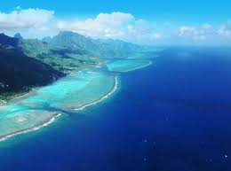
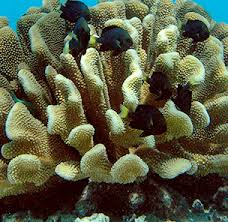
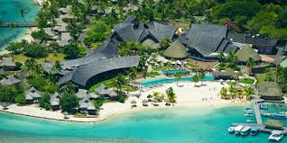
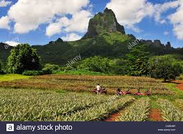
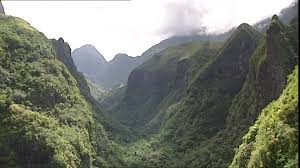
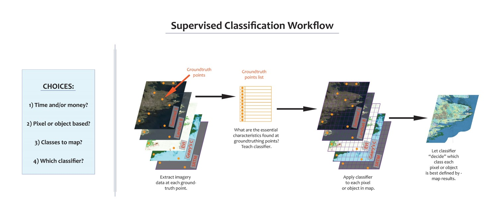
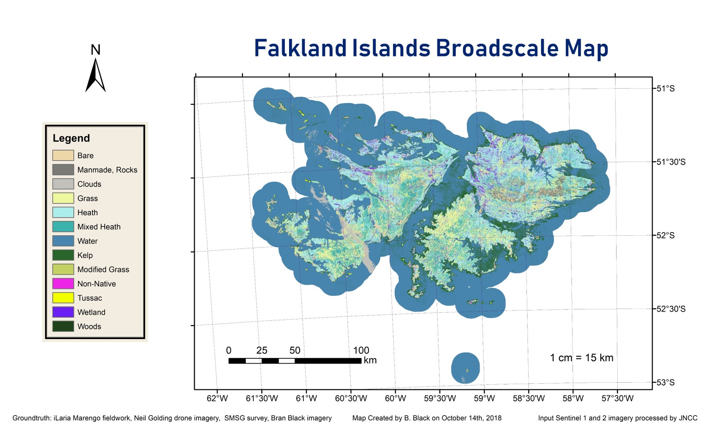
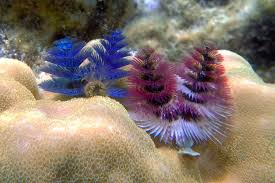

Located in the Society Islands of French Polynesia, Mo'orea lies about 12 miles northwest of Tahiti.
The coral reefs surrounding the island hold tremendous biological and cultural significance to Mo'oreans.
Onshore human activity may have an impact on offshore coral reef health.
The Mo'orea Coral Reef Long-Term Ecological Research (LTER) Network has been in place since 2004.
Research at this site collects an array of ecological data series, such as the bi-monthly water column nutrient concentrations data shown here at LTER monitoring Site 1.
Such data may illuminate patterns and shifts in nutrient concentration over time.
Cook's Bay is a prime example of built-up areas on the island.
Infrastructure along the shoreline serves as a potential source of increased nutrient and sediment load in nearby waters.
Towns and human construction extending along the bay have spread up into the steep slopes leading to the center of the island.
Patches of clear-cut vegetation can be found scattered around the island.
Recently disturbed ground may be a source of increased nutrients that ultimately make their way offshore.
High-slope areas cut across the island only a short distance from the coast.
In fact, very little of the island has gentle slopes.
Sediments from steep ridgelines have only a short distance to travel before they make their way into the ocean.
Satellite imagery-based landcover classification maps can be used to track landcover change over time.
Google Earth Engine provides an excellent platform to create landcover classification maps derived from medium resolution, open access satellite imagery, such as the map of the Falkland Islands below.
Passageways have been cut through the reef to increase ease of ship passage. Consequential impact on the circulation of nutrients? Currently unknown.
Identifying coral reef connecivity may shed light on the course that suspended sediments and nutrients follow once introduced to the reef.
Future research will center on delineating the flow of sediments throughout the coral reef as a proxy for terrestrially-sourced inorganic nutrients.